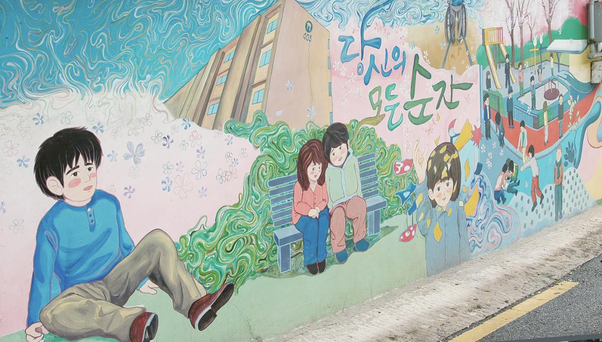

|  | |
|---|---|
| 이름 | 강풀만화거리 |
| 소재지 | 서울특별시 강동구 천호대로168가길 38-3(성내동) |
| 설명 | 만화가 '강풀'의 작품이 그려져 있는 벽화 마을. 2013년 '따뜻한 마을 만들기'사업의 일환으로 조성되었다. 강풀의 만화 배경은 실사를 바탕으로 하는 경우가 많은데, 그게 대부분 이곳 강동구였다. 원래 이 동네는 굉장히 조용하고 경기불황으로 인해 골목상권도 가라앉아 있었으나, 만화거리가 조성된 이후 사람이 늘고 활력이 불기 시작했다고 한다. 성내시장과 인접해있어 식사를 해결하기도 수월하다. |
| 대중교통 | 버스 : 130,341,3214 등 지하철 : 5호선 강동역 4번 출구 |